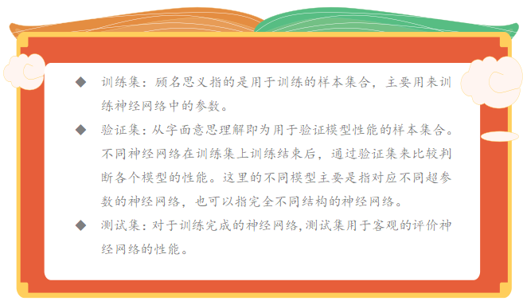
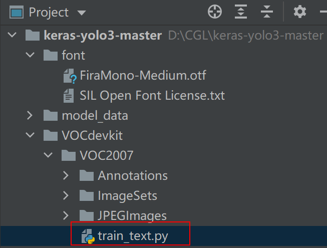
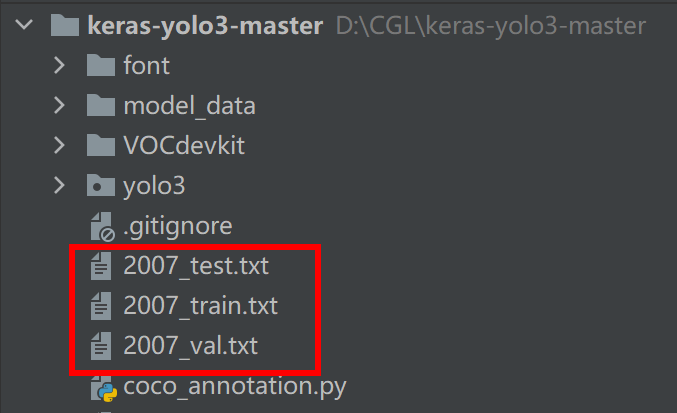
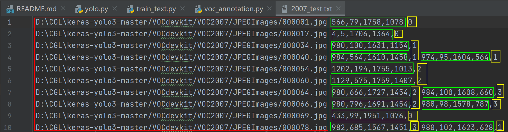
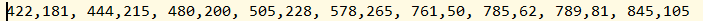
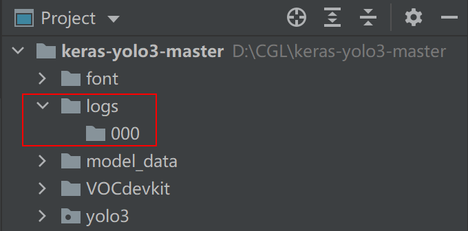
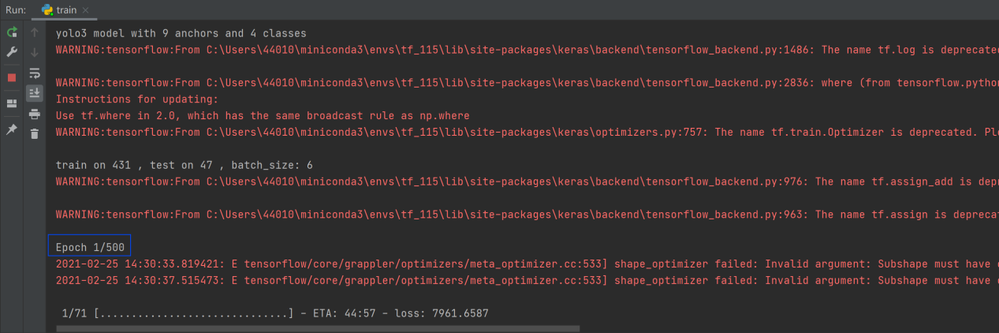

任务五 训练植物识别数据集
【任务描述】
因为我们复用了官方keras-yolov3项目，任务4已经保证我们的环境搭建成功，那么我们只需要换成我们之前准备好的植物数据集，就可以训练模型了。当然，我们还是需要根据实际情况来调整一些参数。
【任务实施】
步骤1 划分数据集
深度学习中,常将可得的数据集划分为训练集(training set),验证集(development set/validation set)和测试集(test set)。

我们可以简单的这么理解，训练集就好像平时老师给你们上课举的每一个例子，带同学们做的每一个练习，让同学们巩固掌握知识。验证集就好像这个学期的小测，通过小测，老师及时调整教学内容和教学方法。测试集就是期末考试，期末考试的内容通常是同学们没见过的题目，但是确在知识范围里面，用来检查同学们这个学期的学习效果。
把数据集文件夹放在项目文件夹的根目录下：

我们需要回到pycharm中，在VOC2007文件夹中新建 train_text.py，写入如下代码。目的是对我们的xml文件进行切分。（即以一定的比例把数据集切分为训练集，测试集等）train_text.py代码如下：
import os
import random
#训练和测试的比值为8：2 当数据规模小的时候，可以调整为9：1
trainval_percent = 0.2
train_percent = 0.8
xmlfilepath = 'Annotations'
txtsavepath = 'ImageSets\Main'
total_xml = os.listdir(xmlfilepath)
num = len(total_xml)
list = range(num)
tv = int(num * trainval_percent)
tr = int(tv * train_percent)
trainval = random.sample(list, tv)
train = random.sample(trainval, tr)
#分别写入如下文件
ftrainval = open('ImageSets/Main/trainval.txt', 'w')
ftest = open('ImageSets/Main/test.txt', 'w')
ftrain = open('ImageSets/Main/train.txt', 'w')
fval = open('ImageSets/Main/val.txt', 'w')
for i in list:
name = total_xml[i][:-4] + '\n'
if i in trainval:
ftrainval.write(name)
if i in train:
ftest.write(name)
else:
fval.write(name)
else:
ftrain.write(name)
ftrainval.close()
ftrain.close()
fval.close()
ftest.close()
但是，这几个文件并不能直接被yolov3读取，需要我们再做一次转换。修改voc_annotation.py 文件，将 classes 修改成自己的类别。
sets=[('2007', 'train'), ('2007', 'val'), ('2007', 'test')]
classes = ["lettuce","shanghai green","salad green","sonchus"]

然后运行，会得到下面3个.txt文件。他们对应的是训练集，测试机，验证集的图片。

每个文件都记录着 3 个信息：图片地址，标注的坐标，以及标注名称的索引 （与上面修改的 voc_annotation.py 文件中的 classes 相对应）。

接着，我们修改model_data文件夹下的voc_classes.txt,将类别修改为我们自己的。这样，我们的数据集就制作好啦。在程序运行的时候，会分布读取txt文件中的路径信息和标注信息。
lettuce
shanghai green
salad green
sonchus
步骤2 使用Kmeans算法获得先验框
事实上，到这一步，我们就可以进行训练了。但是这时候我们使用的anchor_box是原作者在coco数据集上使用Kmeans得到的。并不一定适合现在的数据集。所以我们需要在我们的数据集上也使用Kmeans的到9个适合当前数据集的anchor_box。以得到最好的检测框。新建kmeans.py写入如下代码:
import numpy as np
class YOLO_Kmeans:
def __init__(self, cluster_number, filename):
self.cluster_number = cluster_number
self.filename = filename
# 获得iou
def iou(self, boxes, clusters): # 1 box -> k clusters
'''
boxes:[[weight,height],]
clusters:k个中心点
'''
n = boxes.shape[0]
k = self.cluster_number
# 获得每个标注框的面积
box_area = boxes[:, 0] * boxes[:, 1]
box_area = box_area.repeat(k)
box_area = np.reshape(box_area, (n, k))
# 获得9个标注框的面积，并将2个数组填充为维度一样的数组
cluster_area = clusters[:, 0] * clusters[:, 1]
cluster_area = np.tile(cluster_area, [1, n])
cluster_area = np.reshape(cluster_area, (n, k))
# 对2个数组进行匹配，取出小的那个边长
box_w_matrix = np.reshape(boxes[:, 0].repeat(k), (n, k))
cluster_w_matrix = np.reshape(np.tile(clusters[:, 0], (1, n)), (n, k))
min_w_matrix = np.minimum(cluster_w_matrix, box_w_matrix)
box_h_matrix = np.reshape(boxes[:, 1].repeat(k), (n, k))
cluster_h_matrix = np.reshape(np.tile(clusters[:, 1], (1, n)), (n, k))
min_h_matrix = np.minimum(cluster_h_matrix, box_h_matrix)
# 计算小边长的面积
inter_area = np.multiply(min_w_matrix, min_h_matrix)
# 计算iou
result = inter_area / (box_area + cluster_area - inter_area)
print(result.shape)
return result
# 计算准确率
def avg_iou(self, boxes, clusters):
accuracy = np.mean([np.max(self.iou(boxes, clusters), axis=1)])
return accuracy
def kmeans(self, boxes, k, dist=np.median):
'''
boxes:标注框的宽高
k：需要取到的中心个数
'''
# shape : (标注框个数，2)
box_number = boxes.shape[0]
last_nearest = np.zeros((box_number,))
np.random.seed()
# 随机在标注框中取出k个点作为中心
clusters = boxes[np.random.choice(
box_number, k, replace=False)] # init k clusters
while True:
# 由于iou是越大越好，而聚类到中心的距离又是越小越好，所以
# 在论文中，作者使用使用1-iou 可以保证距离越小，iou越大
distances = 1 - self.iou(boxes, clusters)
current_nearest = np.argmin(distances, axis=1)
if (last_nearest == current_nearest).all():
break # clusters won't change
for cluster in range(k):
clusters[cluster] = dist( # update clusters
boxes[current_nearest == cluster], axis=0)
last_nearest = current_nearest
return clusters
# 将anchors写入txt文件
def result2txt(self, data):
f = open("model_data/anchors.txt", 'w')
row = np.shape(data)[0]
for i in range(row):
if i == 0:
x_y = "%d,%d" % (data[i][0], data[i][1])
else:
x_y = ", %d,%d" % (data[i][0], data[i][1])
f.write(x_y)
f.close()
# 加载图片路径得到标注框的宽高
def txt2boxes(self):
f = open(self.filename, 'r')
dataSet = []
for line in f:
infos = line.split(" ")
length = len(infos)
for i in range(1, length):
# 标注框的四个坐标为 xmin,ymin,xmax,ymax
# width=xmax-xmin height=ymax-ymin
width = int(infos[i].split(",")[2]) - \
int(infos[i].split(",")[0])
height = int(infos[i].split(",")[3]) - \
int(infos[i].split(",")[1])
dataSet.append([width, height])
result = np.array(dataSet)
f.close()
return result
def txt2clusters(self):
all_boxes = self.txt2boxes()
result = self.kmeans(all_boxes, k=self.cluster_number)
result = result[np.lexsort(result.T[0, None])]
self.result2txt(result)
print("K anchors:\n {}".format(result))
print("Accuracy: {:.2f}%".format(
self.avg_iou(all_boxes, result) * 100))
if __name__ == "__main__":
cluster_number = 9
filename = "2007_train.txt"
kmeans = YOLO_Kmeans(cluster_number, filename)
kmeans.txt2clusters()
运行结果如下，我们得到了9个anchor_box,只需要修改一下train.py中的anchors_path的路径，即可开始训练了。

步骤3 模型搭建训练
在开始训练之前，需要我们把数据集制作成一个生成器的结构，以便我们一边训练，一边读取数据。这样可以大大减小内存的压力。我们将train.py中的代码删除，并添加如下的代码，用于制作生成器。
import numpy as np
import keras.backend as K
from keras.layers import Input,Lambda
from keras.models import Model
from keras.callbacks import TensorBoard,ModelCheckpoint,ReduceLROnPlateau
from yolo3.model import preprocess_true_boxes,yolo_body,yolo_loss
from yolo3.utils import get_random_data
import keras
# 数据生成器
def data_generator(annotation_lines,
batch_size,input_shape,
anchors,num_classes):
'''
annotation_lines:图片地址 区域，类别
batch_size:批次大小
input_shape:模型输入大小
anchors:anchors_box
num_classes:类别数量
'''
while True:
image_data=[]
box_data=[]
for i in annotation_lines:
# 获得随机截取，图片增强，并且缩放到416*416的图片以及相应的标注框
image,box=get_random_data(i,input_shape,random=True)
image_data.append(image)
box_data.append(box)
# 数据达到一个批次时返回
if len(image_data)==batch_size:
image_data=np.array(image_data)
box_data=np.array(box_data)
y_true=preprocess_true_boxes(
box_data,input_shape,
anchors,num_classes)
# 组装数据
yield [image_data,*y_true],np.zeros(batch_size)
image_data=[]
box_data=[]
接着，我们还需要编写其他的函数，用来读取txt文件中的数据，以及构建训练模型。
#获取标签名称
def get_classes(path):
with open(path) as f:
class_names=f.readlines()
class_names=[c.strip() for c in class_names]
return class_names
# 获取anchors_box
def get_anchors(path):
with open(path) as f:
anchors=f.readline()
anchors=[float(x) for x in anchors.split(',')]
return np.array(anchors).reshape(-1,2)
# 创建模型结构
def create_model(input_shape,anchors,num_classes,
load_weight=False,weight_path='logs/000/wetghts.h5'):
K.clear_session()
image_input=Input(shape=(None,None,3))
h,w=input_shape #(416,416)
num_anchors=len(anchors)#9
# 分别对应yolov3 的3个输出 13*13 26*26 52*52
y_true=[Input(shape=(h//{0:32,1:16,2:8}[l],
w//{0:32,1:16,2:8}[l],
num_anchors//3,num_classes+5)) for l in range(3)]
model_body=yolo_body(image_input,num_anchors//3,num_classes)
print('yolo3 model with %s anchors and %s classes'%(num_anchors,num_classes))
# 是否加载权重
if load_weight:
model_body.load_weights(weight_path,by_name=True,
skip_mismatch=True)
model_loss=Lambda(yolo_loss,output_shape=(1,),name='yolo_loss',
arguments={'anchors':anchors,
'num_classes':num_classes,
'ignore_thresh':0.7})\
([*model_body.output,*y_true])
model=Model([model_body.input,*y_true],model_loss)
return model
然后，进行训练函数的编写，在训练的时候，我们还可以使用回调函数对训练过程进行控制。比如，使用ModelCheckpoint()函数可以自动保存最佳的模型；使用ReduceLR0nPlateau()函数可以控制学习自动率衰减。
# 训练函数
def train(model, annotation_path, test_path, input_shape, anchors, num_classes, log_dir='logs/'):
'''
model:模型
annotation_path,test_path:训练路径和测试路径
input_shape:模型输入
anchors:anchors_box
num_classes:类别个数
'''
# 编译模型
model.compile(optimizer=keras.optimizers.Adam(lr=3e-4),
loss={'yolo_loss': lambda y_true, y_pred: y_pred})
# 定义自动保存最佳模型
checkpoint = ModelCheckpoint(log_dir +
'ep{epoch:03d}-loss{loss:.3f}-val_loss{val_loss:.3f}.h5',
monitor='val_loss', save_weights_only=True,
save_best_only=True, period=1)
# 学习率衰减
reduce_lr = ReduceLROnPlateau(monitor='val_loss', factor=0.2, patience=10,
min_lr=1e-7, verbose=1)
# 批次大小，训练集和验证集的划分比例
batch_size = 6
val_split = 0.1
with open(annotation_path) as f:
train_lines = f.readlines()
with open(test_path) as f:
test_lines = f.readlines()
# 打乱数据
lines = train_lines + test_lines
np.random.shuffle(lines)
num_val = int(len(lines) * val_split)
num_train = len(lines) - num_val
print('train on %s , test on %s , batch_size: %s' % (num_train, num_val, batch_size))
# 训练
model.fit_generator(data_generator(lines[:num_train],
batch_size, input_shape,
anchors, num_classes),
steps_per_epoch=num_train // batch_size,
validation_data=data_generator(lines[num_train:],
batch_size, input_shape,
anchors, num_classes),
validation_steps=num_val // batch_size,
callbacks=[reduce_lr, checkpoint],
epochs=500)
model.save_weights(log_dir + 'wetghts.h5')
紧接着，我们只需要定义一个main函数，并调用到它。
def _main():
# 定义路径
annotation_path = '2007_train.txt'
test_path = '2007_test.txt'
log_dir = 'logs/000/'
classes_path = 'model_data/voc_classes.txt'
anchors_path = 'model_data/yolo_anchors.txt'
# 获取类别
class_names = get_classes(classes_path)
# 获取anchor_box
anchors = get_anchors(anchors_path)
input_shape = (416, 416)
# 搭建模型
model = create_model(input_shape, anchors, len(class_names))
# keras.utils.plot_model(model,'yolo.png',show_shapes=True)
# 训练
train(model, annotation_path, test_path, input_shape,
anchors, len(class_names), log_dir=log_dir)
if __name__ == '__main__':
_main()
最后，在keras-yolo3-master文件夹下建立文件夹目录：logs/000，用于保存训练生成的模型。

现在可以运行train.py文件，train.py文件设置训练500周期，训练结束后我们将获得训练模型。

步骤4 测试模型
当我们有一个已经训练好的模型之后，我们就可以使用它来预测数据了，首先我们进入到yolo.py文件中，修改 _defaults 配置中的model_path,anchors_path,以及 classes_path 为我们自己的路径。

在yolo.py代码的最后面加上下面代码，进行蔬菜检测：
yolo=YOLO()
img=Image.open('00407.jpg')
img_obj=yolo.detect_image(img)
img_obj.show()

使用视频进行检测其实也很简单，只需要写入如下2行代码即可，因为实际上视频是由一帧一帧的图片组成，所以检测视频本质上也是对图片的检测。
yolo=YOLO()
detect_video(yolo,'test.mp4')
Tips：
yolo中 loss值分为4个，分别是中心点位置、宽高、置信度、类别。在刚开始训练的时候，这些数据都是随机的。所以loss会很大，但是同时找到更接近实际值的参数也就更容易，所以loss就收敛得快，但到后面会收敛得很慢。一个正常训练得模型 ，loss曲线在后面收敛会比较慢，并且会伴随着波动。
至此，我们的实验都做完了。
本任务实战代码如下,位于/xm2/rw3-rw5/keras-yolo3-master/ 中 同学们需要完成如下几个步骤
运行 /xm2/rw3-rw5/keras-yolo3-master/VOCdevkit/VOC2007/train_text.inpy 划分数据集
运行 /xm2/rw3-rw5/keras-yolo3-master/voc_annotation.inpy 转换数据
运行 /xm2/rw3-rw5/keras-yolo3-master/train.inpy 开始训练